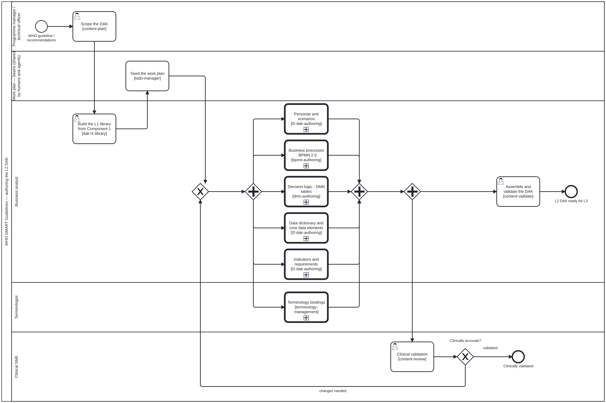

Generated from
smart-base/skills/content/authoring-who-smart-guidelines/l2-dak-authoring.md— do not edit here. Typed contract: schema reference.
l2-dak-authoring
Skill id:
l2-dak-authoring· Package:authoring-who-smart-guidelines· Named byl2-dak-authoring.bpmnsteps Personas and scenarios, Data dictionary and core data elements, Indicators and requirements, all in theBusiness analystlane and each a call intol2-component-edit-review.bpmn, and bydak-l3-ig.bpmnstep Map L2 → L3, besidel3-fhir-authoring, before that diagram calls fhir-harness’s genericl3-fhir-pipeline.bpmn.
Author the L2 layer of a WHO SMART Guideline: the human-readable, machine-processable Digital Adaptation Kit that sits between a narrative guideline (L1) and FHIR artefacts (L3).
Sourcing. The DAK component set and the L1–L4 knowledge layers are WHO’s, defined in the SMART Guidelines documentation and realised in
WorldHealthOrganization/smart-base. This skill states how to work them in this harness — which lane, which inputs, which tooling — and defers to WHO for what a DAK component must contain. Where the two disagree, WHO is right and this file is stale.
Input and output
The contract is input.schema.json and output.schema.json.
- In:
dakComponent(required),sourceGuideline(required),existingContent,sprintNumber; as stage 4 ofsmart-guideline-end-to-end, also stage 2’sl1Kgand stage 3’sl2Dependencies(l2-dependency-choice’s output). - Out:
artifacts(each anl2Artifact:path,type,description),status,validationIssues,stagingLinks. Stage 5 (l3-dependency-choice) takes the artifacts of every pass as itsl2Assets.
dakComponent is the unit of work. Author one component per pass; a DAK is
completed component by component, and a sprint that touches five half-way is
harder to review than one that finishes two.
What L2 is for, and the mistake to avoid
L2 is structured but not yet FHIR. Its job is to be reviewable by a clinical SME who does not read FHIR, while being regular enough that L3 can be derived from it rather than written twice.
So the failure mode is authoring L2 as if it were L3 — reaching for profiles,
slicing and invariants at a stage whose reviewer is a clinician. If a decision
can only be expressed in FHIR, it belongs in l3-fhir-authoring; if it can be
stated as a data element, a decision rule or an indicator, it belongs here.
The three activities the process names
| step | produces | note |
|---|---|---|
| Personas and scenarios | the actors and the user journeys they appear in | These are the DAK’s own personas, and they are not this harness’s scenarios/roles.json — do not conflate the two vocabularies. |
| Data dictionary and core data elements | the data dictionary | data-dictionary-authoring is a facet of this skill, not a separate one; the input schema already carries data-dictionary as a component. |
| Indicators and requirements | indicators, functional and non-functional requirements | Requirements here are the DAK’s, distinct from skills/requirements/*.json, which are this harness’s own conformance obligations. |
Business processes and decision logic are the sibling skills bpmn-authoring
and dmn-authoring; terminology binding is terminology-management.
Every track is edited, then reviewed alongside
Each of the six tracks (the three above, BPMN, DMN and terminology) is a
call activity into Process_L2ComponentEditReview
(l2-component-edit-review). In that
subprocess the agent:
- edits the component with the track’s skill;
- runs the component’s checker;
- renders and stages it with a before/after;
- hands it on with
adjudication: pending.
A person in the component’s reviewing role reviews it at the same time, on
the staged preview, through cat-harness’s Process_Review. Review forks
alongside the hand-on and never blocks it. The renderer, checker, diff and
reviewer for each component are in that skill’s table, so they are not
repeated here. The clinical SME’s Clinical validation after the join is
the whole-DAK reading across components. It does not repeat these
per-component reviews.
Tooling
smart-base carries the extractors that read authored L2 artefacts —
dd_extractor, dt_extractor, req_extractor, extractpr. Load a checkout
rather than vendoring it; smart-base-tools states why and how, and what
happens when SMART_BASE_HOME is unset (the skill degrades to skip, it does
not report a clean run over a toolchain it never had).
Where this sits
l2-dak-authoring.bpmn carries <cat-harness.processes:policy enforcement="advisory"/>: it is
a per-content-type process, and this package owns what “adequate” means in its
domain. That is licence to adapt the sequence, not to skip the gate — the base
processes it feeds (editing-hci-validation, content-lifecycle) stay strict.
When this skill runs as stage 4 of
smart-guideline-end-to-end, clinical
validation is that stage’s adjudication. It runs beside the next stage and
does not hold it up: the agent goes on to choose L3 dependencies while the L2
assets are reviewed one by one.
Processes that run this skill
This skill has its own process: L2 DAK authoring.
